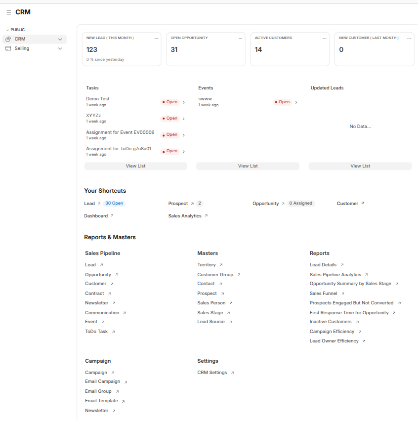
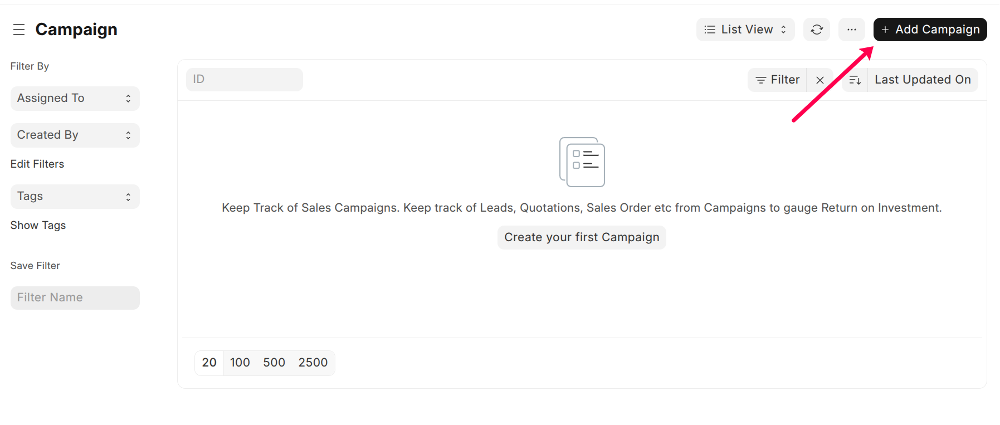

CRM Workspace
CRM Workspace Overview
Path: CRM
The CRM workspace provides a centralized view of lead generation,
sales pipeline health, customer activity, and ongoing tasks. It helps sales
teams monitor daily operations and overall CRM performance.

Note: All cards, shortcuts, and links are displayed based on
user roles and permissions. The workspace can be customized as per business needs.
Key Performance Indicators (KPIs)
The top section displays summary cards that provide a quick snapshot of CRM activity.
- New Leads (This Month) – Total leads created in the current month
- Open Opportunities – Active opportunities in the pipeline
- Active Customers – Customers with ongoing engagement
- New Customers (Last Month) – Customers added in the previous month
Tasks, Events, and Updated Leads
This section helps users track daily activities and recent changes.
- Tasks – Assigned tasks and pending follow-ups
- Events – Scheduled meetings, calls, and demos
- Updated Leads – Recently modified leads with current status
Each section provides a View List option to see detailed records.
Your Shortcuts
The Your Shortcuts section provides quick access to frequently
used CRM actions.
- Lead – View open leads
- Prospect – View prospects created from leads
- Opportunity – View assigned opportunities
- Customer – Access customer records
- Dashboard – View CRM dashboards
- Sales Analytics – Analyze CRM and sales performance
Reports & Masters
Sales Pipeline
- Lead
- Opportunity
- Customer
- Contract
- Newsletter
- Communication
- Event
- ToDo Task
Masters
- Territory
- Customer Group
- Contact
- Prospect
- Sales Person
- Sales Stage
- Lead Source
Reports
- Lead Details
- Sales Pipeline Analytics
- Opportunity Summary by Sales Stage
- Sales Funnel
- Prospects Engaged But Not Converted
- First Response Time for Opportunity
- Inactive Customers
- Campaign Efficiency
- Lead Owner Efficiency
Campaign
Path: CRM → Campaign → Campaign → New

Steps
- Enter Campaign Name
- Select campaign schedule and frequency
- Add email templates if required
- Enter description
- Click Save
Purpose
To plan, execute, and track marketing or sales campaigns.
Email Group
Path: CRM → Campaign → Email Group → New
Steps
- Enter Email Group Name
- Add recipients or filters
- Click Save
Purpose
To group recipients for targeted email campaigns.
Email Campaign
Path: CRM → Campaign → Email Campaign → New
Steps
- Select Campaign
- Choose recipients (Lead, Contact, or Email Group)
- Set start date and schedule
- Change sender if required
- Click Save
Purpose
To send bulk emails and measure campaign effectiveness.
Newsletter
Path: CRM → Campaign → Newsletter → New
Steps
- Enter sender address
- Add subject, message, and attachments
- Select campaign (optional)
- Click Save
- Send immediately or schedule for later
Purpose
To send email communications to a selected audience at a specific time.